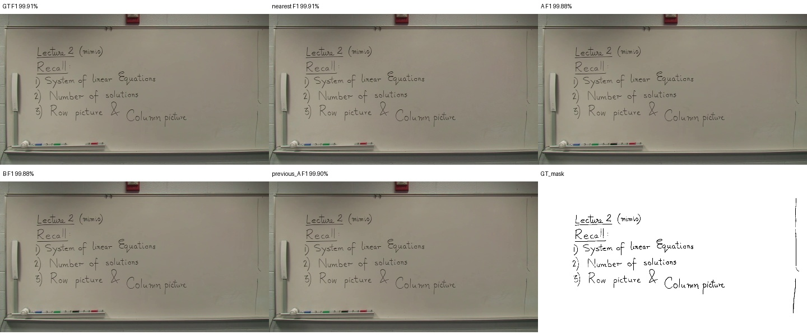
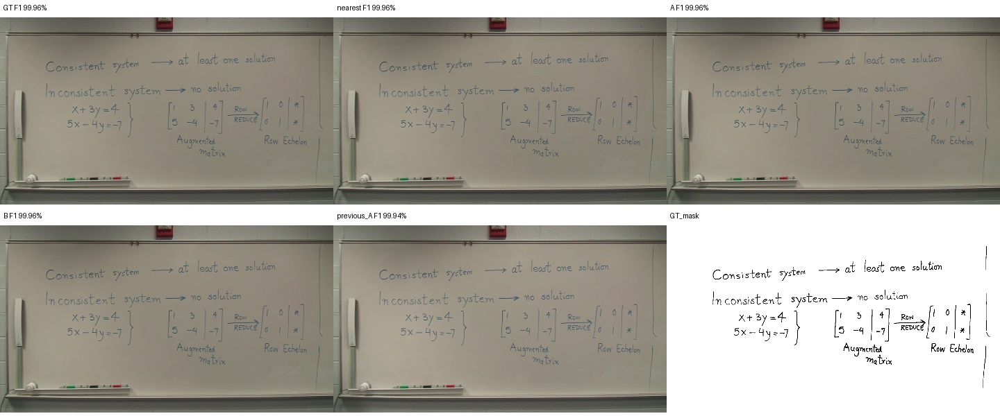
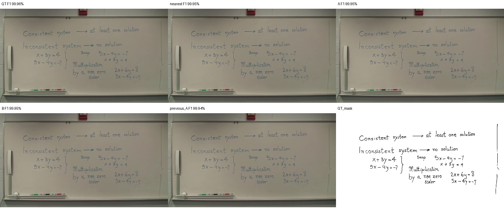
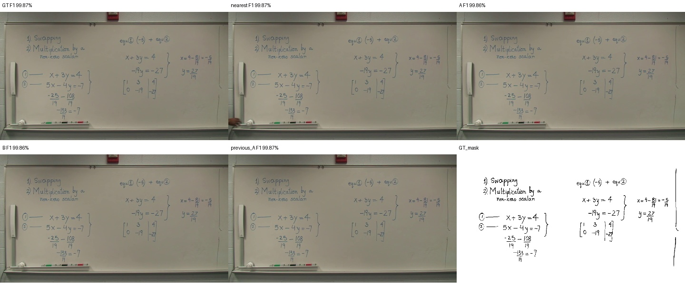
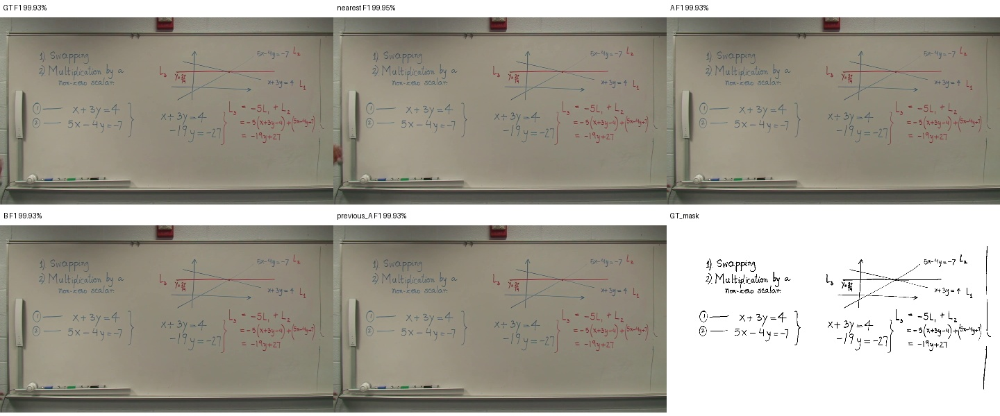
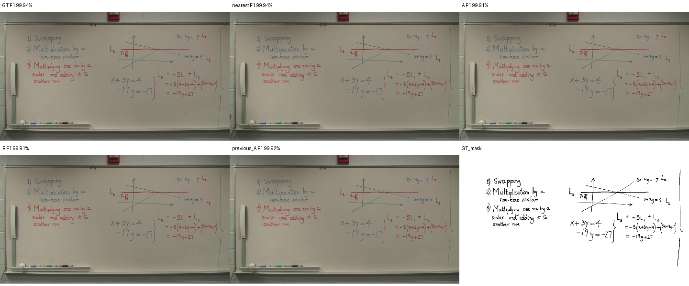
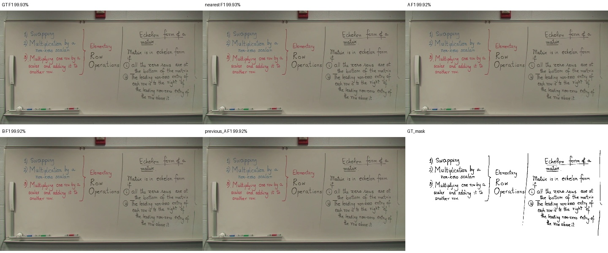
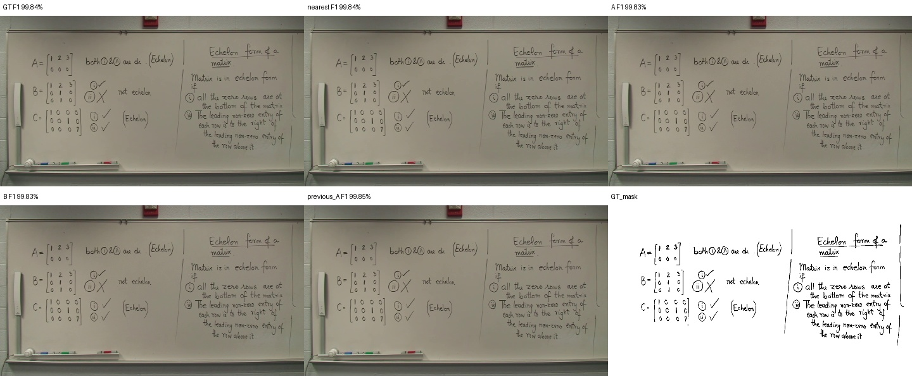
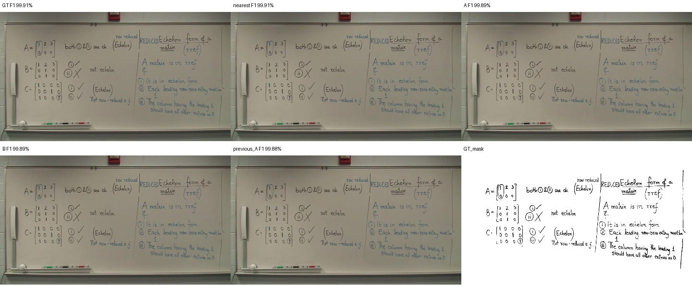

고정 A/B 출력 — 공식 GT 스냅샷 진단
GT는 평가에만 사용. 기존 점수 계산 함수를 유지했습니다. 강의 전체 판서 요약의 공식 unique-CC 지표는 아닙니다.
| Output | Recall | Precision | F1 |
|---|
| GT | 99.99% | 99.85% | 99.92% |
| nearest | 100.00% | 99.84% | 99.92% |
| A | 99.99% | 99.83% | 99.91% |
| B | 99.99% | 99.83% | 99.91% |
| previous_A | 99.71% | 99.47% | 99.59% |
140.374s · p00000 · 선택 181.181s · B original

441.708s · p00002 · 선택 442.942s · B original

513.613s · p00003 · 선택 514.014s · B original

743.576s · p00006 · 선택 736.236s · B original

1109.375s · p00008 · 선택 1092.091s · B original

1488.187s · p00009 · 선택 1488.487s · B original

1555.954s · p00010 · 선택 1545.043s · B original

1915.247s · p00013 · 선택 1916.915s · B original

2169.067s · p00015 · 선택 2166.164s · B original

2569.567s · p00016 · 선택 2570.068s · B original
